outils de base¶
éditeur de code¶
pour pouvoir facilement modifier le contenu de nos fichiers texte, comme tout à l’heure le
fichier foo.txt, on va utiliser un programme qui s’appelle un éditeur de code
en effet, il ne faut pas utiliser un outil comme Word pour éditer des programmes: c’est un éditeur de texte pas un éditeur de code !
l’enseignant lance Visual Studio Code et le montre très très rapidement
installation éditeur de code¶
forts de notre expérience de l’année dernière, cette année 2020-2021, nous demandons à tous les élèves d’installer et de savoir utiliser vs-code
et ATTENTION il y a eu beaucoup de problèmes l’an passé avec les éditeurs de type pyzo, ne les utilisez surtout pas dans nos cours, vous allez perdre un temps précieux et en faire perdre à vos enseignants pour des raisons inintéressantes et extérieures à Python
On y va. Le site est là https://code.visualstudio.com/. Vous voulez installer donc il va falloir que vous alliez dans une section download … vous la voyez ? à vous de jouer maintenant, l’enseignant va montrer les étapes pour les élèves sous Windows. Lisez bien les messages et posez nous vos questions.
conseil
en cochant ces cases lors de l’installation, vous pourrez lancer vs-code avec un clic droit depuis un dossier ou un fichier
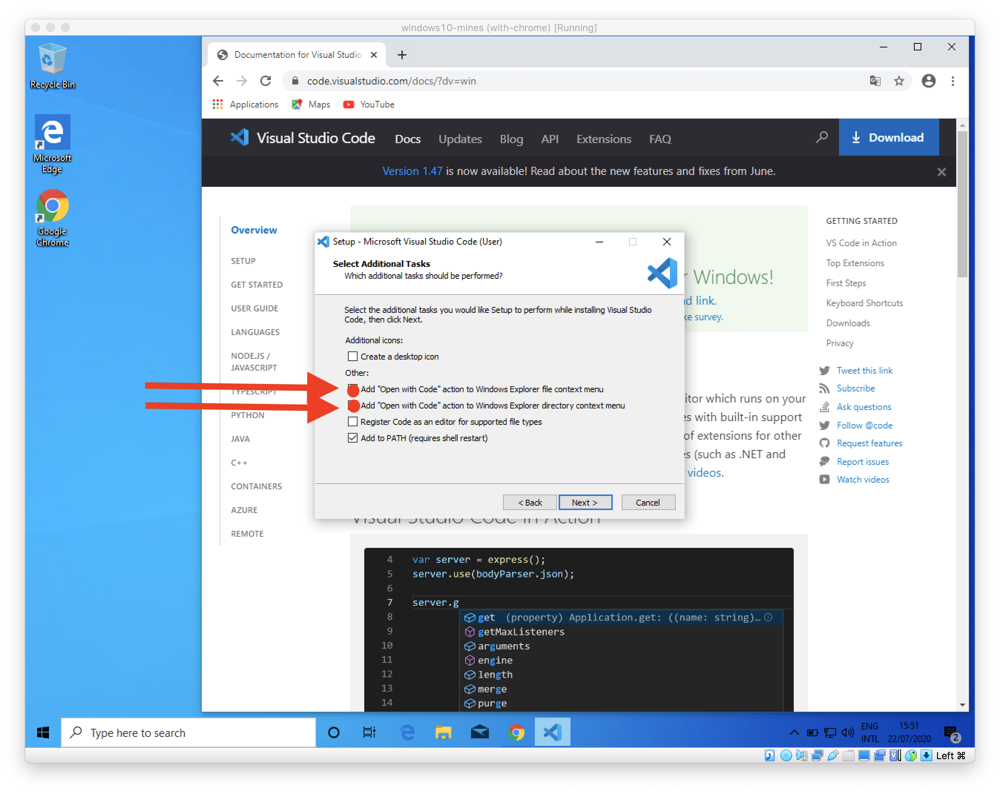
micro-démo vs-code¶
Que vous ayez réussi à installer visual studio code sur votre portable ou pas encore, suivez maintenant ce que montre l’enseignant.
Si vous avez rencontré des problèmes imprévus lors de l’installation (ce qui n’est pas rare en informatique), venez nous voir plus tard pour que nous vous aidions et postez vos problèmes/questions sur discourse pour qu’on y regroupe les réponses aux mêmes problèmes.
micro démo de Visual Code sur le fichier
foo.txt
depuis le terminal, aller dans le bon répertoire et lancer
code .
manipulations simples
afficher/cacher l’explorateur de fichiers
modifier
foo.txt, sauver la version modifiéecréer un nouveau fichier
bar.txt, le sauverobserver le contenu des fichiers depuis le terminal avec
catmontrer comment se manifeste la fin de ligne
montrer des manipulations élémentaires de fenêtres
afficher les deux fichiers côte à côte
puis l’un au dessus de l’autre
montrer comment :
chercher une extension (prétexte : l’extension Python)
installer/désinstaller
activer/désactiver une nouvelle extension
montrer comment :
passer d’une application à une autre avec
⌥ ⇥(Alt-Tab)typiquement pour basculer entre vscode et terminal
de retour dans vs-code, montrer la palette :
⇧ ⌘ PShift-Command-P (mac)⇧ ⌃ PShift-Control-P (windows)
sur Windows, pour choisir ‘bash’ comme terminal
utiliser la palette et taper
Select Default Shell
montrer comment lancer le terminal
Control ` - la deuxième fois on le ferme
voir aussi
https://code.visualstudio.com/docs/getstarted/userinterface
exercice :
refaire les manipulations vous-mêmes une fois l’installation de l’éditeur de code terminée.
il est recommandé, avec vs-code, de prendre l’habitude d’ouvrir un répertoire plutôt qu’un fichier
si vous ouvrez un fichier (par exemple par un clic droit sur le fichier dans l’explorateur de fichiers), vs-code va vous ouvrir le fichier dans une fenêtre déjà ouverte - souvent ça va arriver comme un cheveu sur la soupe, dans un autre répertoire; si votre objectif c’est d’ouvrir une nouvelle fenêtre, préfèrez ouvrir le dossier (toujours avec le clic droit, mais sur le dossier lui-même et non le fichier)
markdown¶
c’est un format simple, léger et bien pensé pour mettre en forme facilement vos textes, il est devenu le couteau suisse pour écrire des documents
avec un minimum de présentation
sections
listes
gras, italique, code
liens
maths
toujours dans un fichier texte (à nouveau, ≠ Word)
format très populaire en ce moment, supporté e.g. :
dans les notebooks, justement,
dans discourse
dans github
sur whatsapp (en partie), …
et plus généralement dans tous les sites web de forums/blogs, où on peut entrer du texte directement depuis le navigateur
micro-démo sous vs-code¶
sous vs-code
créer un fichier
foo.mdremarquer la petite icône
afficher côte à côte le markdown brut et rendu
rapide survol
sections
listes avec et sans numérotation
gras, italique
insister sur les plusieurs façons de mettre du code,
soit
inlinesans saut de ligne, ou alorsavec des “triple ticks”
```avec 4 espaces de marge
images et liens
montrer le code markdown de cette cellule notebook
cheatsheet https://guides.github.com/pdfs/markdown-cheatsheet-online.pdf
mathjax¶
on peut aussi écrire des maths en markdown
ça se fait en utilisant le langage $\LaTeX$
c’est un peu abscons au début mais on s’y habitue vite
parce que c’est vraiment très joli
$$ \forall \epsilon \in \mathbb{R}^+, \exists\alpha\in\mathbb{R}^+, \forall x, |x-x_0| < \alpha\implies |f(x)-f(x_0)| < \epsilon $$
$$ \sum_{i=0}^n i^2 = \frac{(n^2+n)(2n+1)}{6} $$
inline¶
à la base markdown utilise pour ça le signe $
si vous voulez mettre des maths dans un paragraphe (on dit inline), vous utilisez un
seul $ au début et à la fin de l’équation; c-a-d si vous écrivez
voici une petite équation $y = x^2 +2x +1$ au milieu de la ligne
vous obtenez
voici une petite équation $y = x^2 +2x +1$ au milieu de la ligne
paragraphe séparé¶
pour mettre une équation dans un paragraphe séparé on double le dollar de début et de fin
du coup
$$
\forall x \in \mathbb{R}, \forall \epsilon \in \mathbb{R}^+, \exists\alpha\in\mathbb{R}^+ \\
|x'-x| < \alpha\implies |f(x')-f(x)| < \epsilon
$$
se présentera comme ceci :
$$ \forall x \in \mathbb{R}, \forall \epsilon \in \mathbb{R}^+, \exists\alpha\in\mathbb{R}^+ \ |x’-x| < \alpha\implies |f(x’)-f(x)| < \epsilon $$
au passage, vous remarquez que les commandes $\LaTeX$ commencent par \
les mots du jargon $\LaTeX$¶
ça dépasse complètement notre périmètre que d’essayer de faire le tour de $\LaTeX$; je préfère commencer par quelques exemples qui devraient vous permettre de démarrer
$$ \forall x\in \mathbb{R}, ; \exists y \leq \epsilon $$
\forall x \in \mathbb{R},
\; \exists y \leq \epsilon
$$x_1=\frac{-b+\sqrt{b^2-4ac}}{2a}$$
x_1=\frac{-b+\sqrt{b^2-4ac}}{2a}
$$ A_{m,n} = \begin{pmatrix} a_{1,1} & a_{1,2} & \cdots & a_{1,n} \ a_{2,1} & a_{2,2} & \cdots & a_{2,n} \ \vdots & \vdots & \ddots & \vdots \ a_{m,1} & a_{m,2} & \cdots & a_{m,n} \end{pmatrix} $$
$$
A_{m,n} =
\begin{pmatrix}
a_{1,1} & a_{1,2} & \cdots & a_{1,n} \\
a_{2,1} & a_{2,2} & \cdots & a_{2,n} \\
\vdots & \vdots & \ddots & \vdots \\
a_{m,1} & a_{m,2} & \cdots & a_{m,n}
\end{pmatrix}
$$
$$ \sum_{i=0}^n i^2 = \frac{(n^2+n)(2n+1)}{6} $$
\sum_{i=0}^n i^2 = \frac{(n^2+n)(2n+1)}{6}
ceux qui veulent creuser peuvent
s’exercer avec un outil en ligne https://www.codecogs.com/latex/eqneditor.php
commencer par cet article https://www.physicsoverflow.org/15329/mathjax-basic-tutorial-and-quick-reference
approfondir avec celui-ci https://en.wikibooks.org/wiki/LaTeX/Mathematics
Python¶
installation de base¶
il y a de très nombreuses distributions disponibles
notre recommandation : miniconda
relativement léger
permet d’installer en mode “user” i.e. sans droits administrateur
(ça va sans le dire mais ne prenez surtout pas Python 2.7 !)
nous allons
faire une démonstration de l’installation miniconda sur Windows à partir de https://docs.conda.io/en/latest/miniconda.html (les linux et les macos le font pour leur OS + architectures)
puis écrire un ou deux programmes Python très simples
et les exécuter dans un terminal
préparation : création d’un dossier c:\miniconda¶
nous allons pour commencer créer un dossier dont le nom est court et simple, et qui ne contient pas d’accent (c’est très important que le chemin complet pour accéder au dossier où on installe miniconda ne comporte pas d’accents.)
pour cela nous allons lancer la console Windows qui s’appelle PowerShell, et créer le
dossier c:/miniconda
en deux étapes, ça se présente comme ceci :
(1) pour lancer la console PowerShell
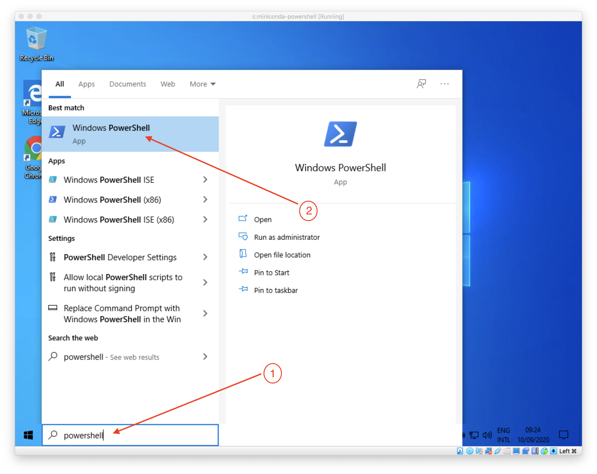
(2) on va créer maintenant le dossier dans lequel on installera ensuite miniconda, et pour cela il y a une seule ligne à taper
md c:/miniconda
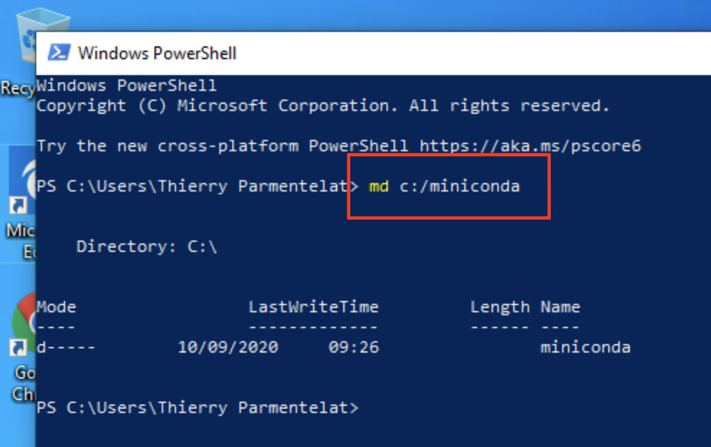
une fois la commande tapée vous pouvez sortir de PowerShell (utiliser la croix en haut à droite par exemple)
installation de miniconda¶
à ce stade on peut lancer l’installation de miniconda
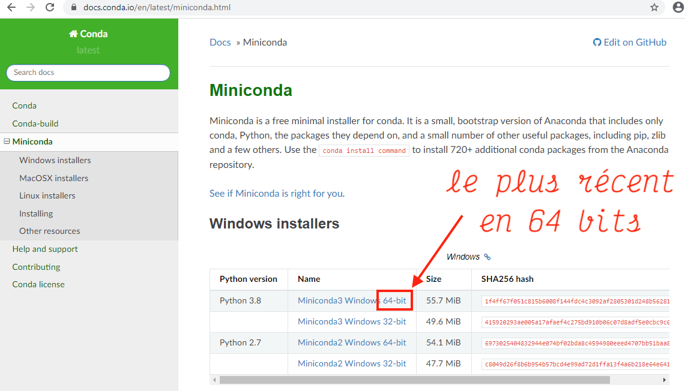
vous lancez le .exe, vous prenez toutes les options par défaut lorsqu’on vous pose une
question, sauf pour les deux écrans qui suivent
(1) sur cet écran vous remplacez le chemin qu’on vous propose par défaut, et vous
choisissez à la place le dossier qu’on a créé dans l’étape précédente, c’est-à-dire
c:\miniconda
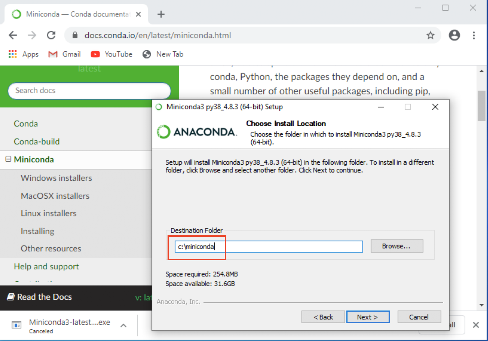
(2) il est important de bien cocher la case en rouge; l’autre est recommandée également
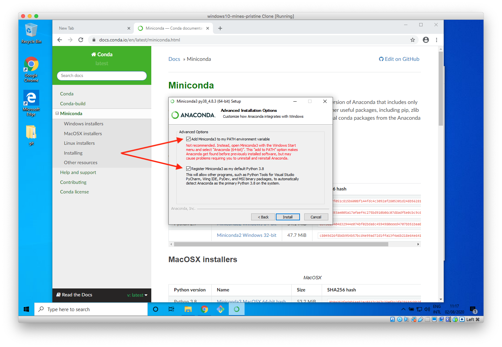
en théorie c’est tout ce qu’il y a à faire pour installer conda
toutefois certains élèves nous ont signalé un souci, aussi on vous recommande de lancer à ce stade dans un terminal
conda init bash
première utilisation / vérification¶
juste après l’installation de conda, quittez vos terminaux actifs; conda a modifié la séquence d’initialisation des terminaux bash, il faut donc faire les tests qui suivent dans un terminal tout neuf.
attention
les signes
$ou>>>ne font pas partie de ce que vous devez taperc’est juste une indication pour dire
avec
$: que la commande s’adresse au terminal
c-à-d à nouveau : GitBash sur Windows, Terminal sur MacOS,
et n’importe quel terminal bash sur linuxavec
>>>: que la commande s’adresse à l’interpréteur Python
ça signifie que ce que vous voyez ici correspond à ce qui sera affiché dans le terminal,
mais si vous suivez bien les indications vous n’avez pas à taper le $ ou les >>>, ce
sera déjà affiché lorsque vous taperez vos commandes
vérifier que Python est bien installé¶
$ type python
python is /c/Users/Thierry Parmentelat/miniconda3/python
si à ce stade vous avez un `python: not found* c’est que vous n’avez pas bien coché la case
Add Miniconda3 to my PATH environment variable
lancer python en mode interactif¶
depuis GitBash, on va lancer un Python interactif et lui faire calculer $2^{100}$,
afficher un texte, puis quitter l’interpréteur.
quelques limitations connues :
lancer simplement
pythondansGitBashne fonctionne pas
(le programme n’affiche pas le prompt et semble boucler sans rien afficher)dans
GitBashvous devez tapez à la placepython -i
(le-iest pour interactive) pour avoir un interpréteur interactifdepuis le terminal embarqué dans vscode, vous pouvez faire simplement
python
(python -ifonctionne bien aussi d’ailleurs)depuis GitBash et le terminal vs-code, vous pouvez lancer normalement
ipython
(dont on parle un peu plus bas)
# pensez à bien mettre le -i - voyez ci-dessus
$ python -i
>>> 2 ** 100
1267650600228229401496703205376
>>> print("hello world")
hello world
>>> exit()
créer et lancer un premier script¶
dans le répertoire de votre choix, ouvrez vs-code et créez un fichier qui s’appelle
fact.py contenant ce texte (n’hésitez pas à copier-coller) :
cat ../demo/fact.py
# une fonction qui calcule factorielle
def fact(n):
return 1 if n <= 1 else n * fact(n-1)
# on affiche quelques résultats
for n in [4, 25]:
print(f"fact({n}) = {fact(n)}")
et dans le même répertoire lancez python pour calculer le factoriel d’un nombre
python ../demo/fact.py 10
fact(4) = 24
fact(25) = 15511210043330985984000000
afficher le numéro de version de Python¶
c’est toujours utile d’être bien sûr de la version qu’on a sous la main (surtout avec les environnments virtuels)
python --version
Python 3.9.5
installation de IPython avec pip¶
lorsqu’on installe Python on installe un ensemble minimal de librairies
par exemple dans fact.py on a fait import sys
pour pouvoir utiliser la librairie sys
c’est très facile d’installer d’autres librairies au delà de cet ensemble minimal
pour cela python vient avec une commande qui s’appelle pip
qui s’utilise directement depuis le terminal
# pour avoir la liste des librairies installées on peut faire
pip list
Package Version
--------------------------------- -------------------
alabaster 0.7.12
anyio 3.3.0
argon2-cffi 20.1.0
async-generator 1.10
attrs 20.3.0
Babel 2.9.1
backcall 0.2.0
beautifulsoup4 4.9.3
bleach 3.3.1
calysto-bash 0.2.2
certifi 2021.5.30
cffi 1.14.6
charset-normalizer 2.0.3
click 7.1.2
colorama 0.4.4
cycler 0.10.0
debugpy 1.4.1
decorator 5.0.9
defusedxml 0.7.1
docutils 0.16
entrypoints 0.3
gitdb 4.0.7
GitPython 3.1.18
idna 3.2
imagesize 1.2.0
importlib-metadata 4.6.1
ipykernel 6.0.3
ipython 7.25.0
ipython-genutils 0.2.0
ipythontutor 0.2.0
ipywidgets 7.6.3
jedi 0.18.0
Jinja2 3.0.1
jsonschema 3.2.0
jupyter-book 0.11.2
jupyter-cache 0.4.2
jupyter-client 6.1.12
jupyter-contrib-core 0.3.3
jupyter-contrib-nbextensions 0.5.1
jupyter-core 4.7.1
jupyter-highlight-selected-word 0.2.0
jupyter-latex-envs 1.4.6
jupyter-nbextensions-configurator 0.4.1
jupyter-server 1.10.1
jupyter-server-mathjax 0.2.3
jupyter-sphinx 0.3.2
jupyterlab-widgets 1.0.0
jupytext 1.10.3
kiwisolver 1.3.1
latexcodec 2.0.1
linkify-it-py 1.0.1
lxml 4.6.3
markdown-it-py 0.6.2
MarkupSafe 2.0.1
matplotlib 3.4.2
matplotlib-inline 0.1.2
mdit-py-plugins 0.2.6
metakernel 0.27.5
mistune 0.8.4
myst-nb 0.12.3
myst-parser 0.13.7
nbautoeval 1.7.0
nbclient 0.5.3
nbconvert 5.6.1
nbdime 3.1.0
nbformat 5.1.3
nest-asyncio 1.5.1
notebook 6.4.0
numpy 1.21.1
packaging 21.0
pandas 1.3.1
pandocfilters 1.4.3
parso 0.8.2
pexpect 4.8.0
pickleshare 0.7.5
Pillow 8.3.1
pip 21.1.3
prometheus-client 0.11.0
prompt-toolkit 3.0.19
ptyprocess 0.7.0
pybtex 0.24.0
pybtex-docutils 1.0.0
pycparser 2.20
pydata-sphinx-theme 0.6.3
Pygments 2.9.0
pyparsing 2.4.7
pyrsistent 0.18.0
python-dateutil 2.8.2
pytz 2021.1
PyYAML 5.4.1
pyzmq 22.1.0
requests 2.26.0
requests-unixsocket 0.2.0
rise 5.7.1
Send2Trash 1.7.1
setuptools 52.0.0.post20210125
six 1.16.0
smmap 4.0.0
sniffio 1.2.0
snowballstemmer 2.1.0
soupsieve 2.2.1
Sphinx 3.5.4
sphinx-book-theme 0.1.1
sphinx-comments 0.0.3
sphinx-copybutton 0.4.0
sphinx-external-toc 0.2.2
sphinx-jupyterbook-latex 0.4.2
sphinx-multitoc-numbering 0.1.3
sphinx-panels 0.5.2
sphinx-rtd-theme 0.5.2
sphinx-thebe 0.0.8
sphinx-togglebutton 0.2.3
sphinxcontrib-applehelp 1.0.2
sphinxcontrib-bibtex 2.2.1
sphinxcontrib-devhelp 1.0.2
sphinxcontrib-htmlhelp 2.0.0
sphinxcontrib-jsmath 1.0.1
sphinxcontrib-qthelp 1.0.3
sphinxcontrib-serializinghtml 1.1.5
SQLAlchemy 1.3.24
terminado 0.10.1
testpath 0.5.0
toml 0.10.2
tornado 6.1
traitlets 5.0.5
uc-micro-py 1.0.1
urllib3 1.26.6
wcwidth 0.2.5
webencodings 0.5.1
websocket-client 1.1.0
wheel 0.36.2
widgetsnbextension 3.5.1
zipp 3.5.0
installer d’autres librairies avec pip install¶
nous allons utliser pip install pour installer IPython, et pour ça vous allez taper
(dans un terminal)
pip install ipython
# la première fois qu'on installe une librairie, ça peut prendre
# un petit moment pour aller chercher les packages
# sur Internet et les installer
pip install ipython
Requirement already satisfied: ipython in /usr/share/miniconda/envs/python-numérique/lib/python3.9/site-packages (7.25.0)
Requirement already satisfied: setuptools>=18.5 in /usr/share/miniconda/envs/python-numérique/lib/python3.9/site-packages (from ipython) (52.0.0.post20210125)
Requirement already satisfied: prompt-toolkit!=3.0.0,!=3.0.1,<3.1.0,>=2.0.0 in /usr/share/miniconda/envs/python-numérique/lib/python3.9/site-packages (from ipython) (3.0.19)
Requirement already satisfied: pygments in /usr/share/miniconda/envs/python-numérique/lib/python3.9/site-packages (from ipython) (2.9.0)
Requirement already satisfied: pexpect>4.3 in /usr/share/miniconda/envs/python-numérique/lib/python3.9/site-packages (from ipython) (4.8.0)
Requirement already satisfied: pickleshare in /usr/share/miniconda/envs/python-numérique/lib/python3.9/site-packages (from ipython) (0.7.5)
Requirement already satisfied: decorator in /usr/share/miniconda/envs/python-numérique/lib/python3.9/site-packages (from ipython) (5.0.9)
Requirement already satisfied: jedi>=0.16 in /usr/share/miniconda/envs/python-numérique/lib/python3.9/site-packages (from ipython) (0.18.0)
Requirement already satisfied: backcall in /usr/share/miniconda/envs/python-numérique/lib/python3.9/site-packages (from ipython) (0.2.0)
Requirement already satisfied: matplotlib-inline in /usr/share/miniconda/envs/python-numérique/lib/python3.9/site-packages (from ipython) (0.1.2)
Requirement already satisfied: traitlets>=4.2 in /usr/share/miniconda/envs/python-numérique/lib/python3.9/site-packages (from ipython) (5.0.5)
Requirement already satisfied: parso<0.9.0,>=0.8.0 in /usr/share/miniconda/envs/python-numérique/lib/python3.9/site-packages (from jedi>=0.16->ipython) (0.8.2)
Requirement already satisfied: ptyprocess>=0.5 in /usr/share/miniconda/envs/python-numérique/lib/python3.9/site-packages (from pexpect>4.3->ipython) (0.7.0)
Requirement already satisfied: wcwidth in /usr/share/miniconda/envs/python-numérique/lib/python3.9/site-packages (from prompt-toolkit!=3.0.0,!=3.0.1,<3.1.0,>=2.0.0->ipython) (0.2.5)
Requirement already satisfied: ipython-genutils in /usr/share/miniconda/envs/python-numérique/lib/python3.9/site-packages (from traitlets>=4.2->ipython) (0.2.0)
micro-démo ipython¶
si vous devez taper du code Python directement dans le terminal, je vous recommande
d’utiliser la commande ipython plutôt que l’interpréteur standard python
voilà à quoi ça ressemblerait si on devait refaire le calcul de $2^{100}$ comme on l’a fait plus haut
$ ipython
Python 3.8.3 (default, Jul 2 2020, 11:26:31)
Type 'copyright', 'credits' or 'license' for more information
IPython 7.16.1 -- An enhanced Interactive Python. Type '?' for help.
In [1]: 2 ** 100
Out[1]: 1267650600228229401496703205376
In [2]: print("hello world")
hello world
In [3]: exit()
comme vous le voyez c’est presque pareil; simplement avec ipython c’est beaucoup plus pratique dès qu’on va au delà de ce genre de session de démo, notamment pour
remonter et modifier l’historique
obtenir de l’aide en ligne
utiliser la complétion
installation de numpy / pandas / matplotlib¶
le calcul scientifique en Python se fait avec 3 librairies très très communes, sur lesquelles on reviendra très prochainement
pour l’instant nous allons les installer avec la commande
pip install numpy pandas matplotlib
vérification¶
pour vérifier, vous pouvez d’abord, depuis le terminal, faire
pip show numpy
qui vous montrera en plus le numéro de version de numpy
vous pouvez aussi importer la librairie numpy depuis ipython, ça donne une session qui
ressemble à ceci (vous ne devez pas avoir d’erreur du type ModuleNotFound)
$ ipython
Python 3.8.3 (default, Jul 2 2020, 11:26:31)
<blabla>
In [1]: import numpy
In [2]: numpy.__version__
Out[2]: '1.19.1'
la complétion¶
ce qu’on appelle complétion, c’est la capacité d’un outil à vous aider à taper votre code; exemple :
on lance
ipythonon tape le début d’une commande, par exemple
import fracà ce point, on appuie sur la touche
Tabulationipython se rend compte que le seul mot qui fait du sens dans ce contexte et qui commence par
fracestfractions, du coup il remplit la commande
la complétion est un outil indispensable pour ne pas perdre un temps précieux; apprenez à la maitriser
notez d’ailleurs que ça existe aussi dans le terminal, typiquement très utile avec les noms de fichiers, entre autres
RTFEM¶
il est normal de faire des erreurs quand on code, tout le monde en fait
on verra un peu plus loin comment les détecter le plus tôt possible (grâce à des
extensions dans un éditeur de code)
mais les cas où ça se produit quand même, la première chose à faire est bien entendu de
lire le message d’erreur
le langage Python s’efforce de vous donner des indications plutôt claires dans ces cas-là
voici par exemple un fichier très proche de fact.py qu’on vient de faire tourner
mais j’y ai intentionnellement glissé une petite erreur de syntaxe
voici le code, et ce qui se produit si on essaie de le faire tourner
cat ../demo/fact-broken.py
# ce fichier est intentionnellement cassé
def factorial(n)
if n <= 1:
return 1
else:
return n * factorial(n-1)
import sys
n = int(sys.argv[1])
print(f"fact({n}) = {factorial(n)}")
python ../demo/fact-broken.py
File "/home/runner/work/python-numerique/python-numerique/notebooks/../demo/fact-broken.py", line 3
def factorial(n)
^
SyntaxError: invalid syntax
je vous demande en exercice de trouver l’erreur en question
en pratique il arrive qu’on se trouve face à des erreurs plus difficiles à diagnostiquer,
mais dans tous les cas commencez par RTFEM
ça va de soi mais ça va mieux en le disant, je suis certain qu’on aura l’occasion de le
rappeler pendant les cours de langage :)
git¶
survol¶
git fait partie des outils dits de “SCM” source code management
son rôle est d’aider les développeurs à s’y retrouver dans la gestion des versions d’un projet
un projet est constitué d’un ensemble de fichiers dont vous souhaitez conserver un historique des modifications
d’ailleurs ça n’est pas limité aux logiciels :
jeux de données
documentation
lois (très utile pour gérer les modifications)
…
à quoi ça sert - quand on travaille seul¶
en première approximation, on peut se servir de git pour :
travailler “avec un filet”
pour facilement revenir en arrière à une version qui marche
ça sert donc en particulier de sauvegarde de luxelorsqu’on travaille sur plusieurs améliorations en même temps
on peut facilement créer des branches
pour traiter les améliorations séparément
avant de tout (re)mettre ensemble
à quoi ça sert - en équipe¶
on peut aussi :
synchroniser le travail entre groupes / personnes
dans un sens ou dans l’autre
c-a-d: chacun travaille de son coté, et on réconcilie le tout ensuite
git ne fait pas de supposition sur le workflow ou l’organisation,
on peut l’adapter à tous les cas d’usage (un seule personne, un petit groupe, plusieurs
groupes, open-source, …)
les notions de base¶
un dépôt (en anglais repo) :
ça ressemble à un répertoire avec tout son contenu
mais ça contient aussi toutes les versions successives
un commit :
ça correspond à une version particulière du dépôt (de tous les fichiers du dépôt)
et donc un dépôt contient autant de commits que de versions successives
alice et bob¶
un exemple de workflow sous forme de présentation pdf
(le pdf fait partie du dépôt git,
dans media/git-workflow-animations.pdf)
compte sous github¶
Dans la petite présentation alice a choisi GitHub pour rendre son travail disponible à
tout le monde en open-source sur Internet.
En effet, GitHub est un service web dédié à l’hébergement et à la gestion du
développement de logiciels (open source ou pas). Il utilise le logiciel de gestion de
versions Git. Il est actuellement le plus grand hébergeur de code source au monde aussi
c’est celui que nous allons vous demander d’utiliser.
Vous devrez (pas tout de suite) allez sur https://github.com/join pour y créez un compte. Il va naturellement vous falloir un nom d’utilisateur … attention depuis janvier 2020, il y a plus de 40 millions d’utilisateurs donc il se peut que le nom que vous vouliez soit déjà pris.
Nous vous demanderons de nous faire passer vos identifiants GitHub vu que c’est le
moyen que plusieurs UE vont employer pour relever vos projets.
Pour prendre des projets dans GitHub vous n’avez pas besoin d’un nom d’utilisateur,
c’est pour y mettre des projets que vous en avez besoin.
installation¶
les Windows : à ce stade, vous avez déjà installé git for windows, rien de plus à faire
les MacOS: utilisez ce lien https://www.atlassian.com/git/tutorials/install-git#mac-os-x
les linux : utilisez ce lien https://www.atlassian.com/git/tutorials/install-git#linux
vérification
pour vérifier votre installation, vous devez pouvoir taper dans le terminal
git --version
git version 2.32.0
digression : URL¶
lorsque bob copie le travail qu’alice a publié sur github, il va utiliser git clone (on
va le faire dans un tout petit moment)
mais il faut évidemment qu’il puisse dire à git clone exactement quoi copier, parce
que l’Internet, c’est grand…
pour ça il a besoin d’une URL (Uniform Resource Locator), pour désigner le dépôt d’Alice
c’est quoi une URL ? vous en connaissez déjà plein d’exemples, comme
http://google.com/
https://en.wikipedia.org/wiki/URL
le premier terme (
httpouhttps) désigne le protocole à utiliser pour joindre la ressourcele second morceau (
google.comouen.wikipedia.org) désigne le hostname qu’il faut joindre; en fait on utilise un service réseau qui s’appelle le DNS (Domain Name Server pour traduire le nomwww.google.comen une adresse réseau (et c’est comme ça qu’en fait deux requêtes n’aboutissent pas forcément sur le même serveur, heureusement d’ailleurs)la suite est optionnelle et permet de désigner un item particulier à l’intérieur de ce serveur; c’est comme ça qu’on peut ranger des milliers de pages à l’intérieur du serveur wikipedia
les URLs sur github¶
à l’intérieur du serveur github, les URLs des dépôts ressemblent toutes à celles-ci
https://github.com/python/cpython
https://github.com/gvanrossum/cpython
le premier étage (
pythonougvanrossum) désigne une organisation ou un individule second étage (
cpython) désigne un dépôt
(ici par exemplecpythonpour l’implémetation classique du langage Python)
cloner le dépôt du cours¶
vous avez maintenant tout le bagage pour pouvoir copier le dépôt du cours
il vous suffit pour ça de faire
git clone https://github.com/ue12/python-numerique
Attention toutefois
cette commande va créer sur votre disque tout un répertoire, dont le nom est
python-numeriquenotez qu’il sera créé dans votre répertoire de travail (
pwd)donc commencez par vous mettre au bon endroit
le nom
python-numeriqueest déduit de la dernière partie de l’URL
et si cela ne vous convient pas comme nom vous pouvez en choisir un autre :git clone https://github.com/ue12/python-numerique ue12-python-numerique
pour vérifier que tout s’est bien passé :
# si vous avez utilisé la deuxième forme
# votre répertoire local s'appelle ue12-python-numerique et pas juste python-numerique
cd ue12-python-numerique
# le répertoire est rempli avec la dernière version du cours
cat README.md
suivre les évolutions¶
pour terminer cette micro-introduction : imaginez que demain je publie des modifications dans ce dépôt
alors pour mettre à jour votre dépôt local, il vous suffira de faire
# toujours dans le même répertoire bien sûr
git pull
bon en pratique il arrive que ce soit un peu plus compliqué que ça, mais c’est l’idée générale
on creusera tout ceci dans le cours dédié à git dans quelques semaines
notebooks Jupyter¶
Les notebooks sont de petits cahiers d’exercices exécutables. Ils sont très pratiques pour expliquer pas à pas ce qu’on fait, comme dans ces cours mais ils ne servent pas uniquement aux cours.
Nous allons vous montrer dans cette section comment installer et lancer jupyter, créer
des notebooks avec des cellules de texte et des cellules de code…
installation¶
le socle s’installe comme ceci (ça peut prendre un moment) :
pip install jupyter
je vous invite à installer également ceci; c’est optionnel pour débuter avec Jupyter, mais ça sera nécessaire très vite pour lire les notebooks du cours
pip install jupytext
vérification¶
si tout s’est bien passé vous devez pouvoir voir les versions des différents morceaux de Jupyter comme ceci :
jupyter --version
jupyter core : 4.7.1
jupyter-notebook : 6.4.0
qtconsole : not installed
ipython : 7.25.0
ipykernel : 6.0.3
jupyter client : 6.1.12
jupyter lab : not installed
nbconvert : 5.6.1
ipywidgets : 7.6.3
nbformat : 5.1.3
traitlets : 5.0.5
utilisation de base¶
pour lancer un serveur jupyter vous tapez dans le terminal la commande
jupyter notebook
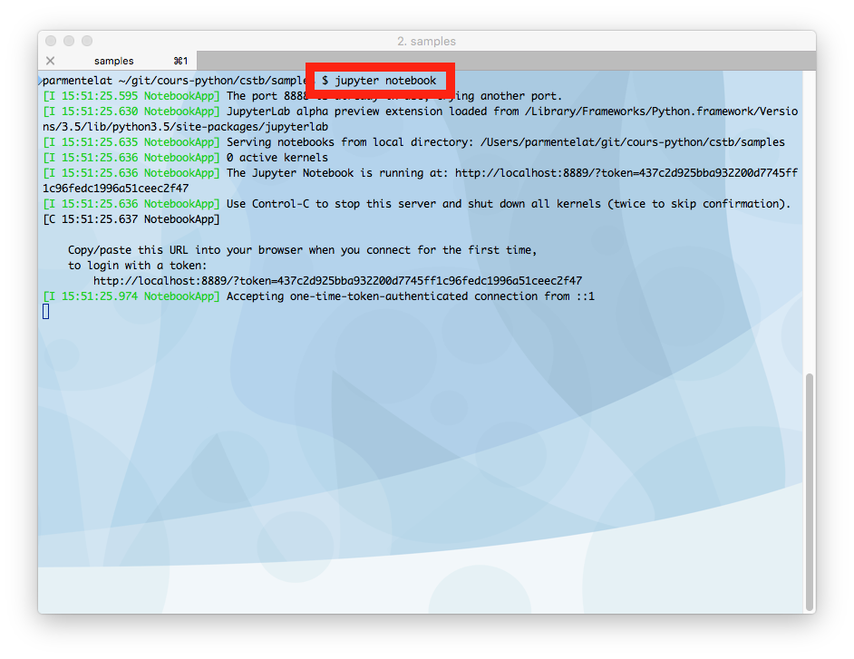
ce qui va avoir pour effet d’ouvrir une fenêtre ou un onglet dans votre navigateur Web
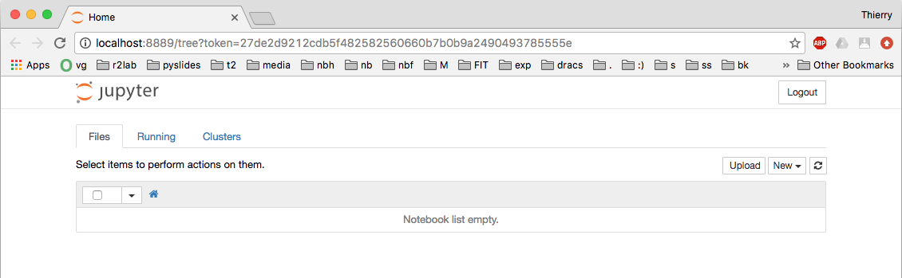
le processus serveur¶
en fait là on fait deux choses complémentaires
on lance un programme (le serveur Jupyter) qui tourne dans le terminal
on demande au browser de créer une page qui interagit avec ce serveur
du coup ça signifie que le serveur Jupyter doit tourner en permanence
si vous le tuez depuis le terminal, le notebook dans le browser va cesser de fonctionner
ça signifie aussi que cette session du terminal n’est plus utilisable pour autre chose…
micro-démo Jupyter classic¶
un notebook est associé à un langage
nos supports de cours :
le plus souvent le langage est Python
le présent notebook est une exception, son langage est bash
chaque cellule est typée comme markdown ou code
et bien sûr celles typées code sont exécutées par … le langage du notebook
(il est possible aussi de mélanger plusieurs langages dans un notebook, mais c’est d’un usage plus complexe)
pour créer un nouveau notebook
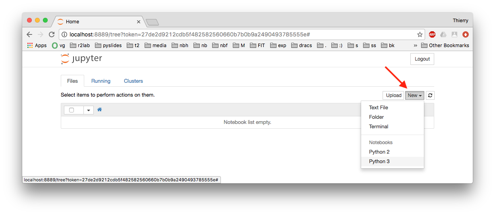
pour renommer le notebook menu File → Rename
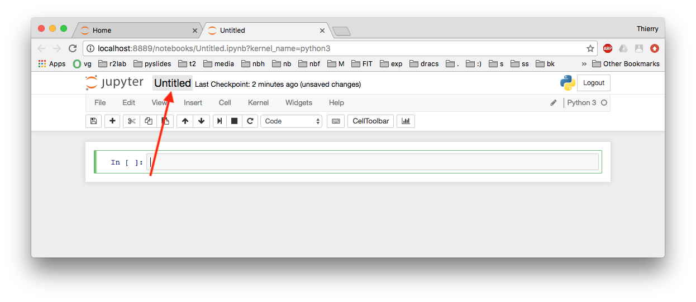
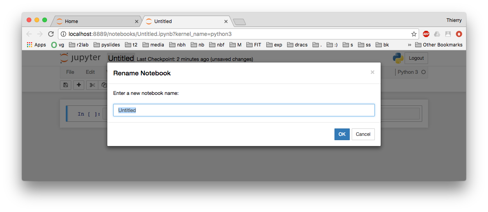
comme toujours il faut sauver son travail régulièrement;
remarquez dans le terminal où vous avez lancé le serveur, un message de confirmation
choisir le type de la cellule; on peut aussi faire
Control-M Mpour markdownControl-M Ypour code (y comme pYthon)
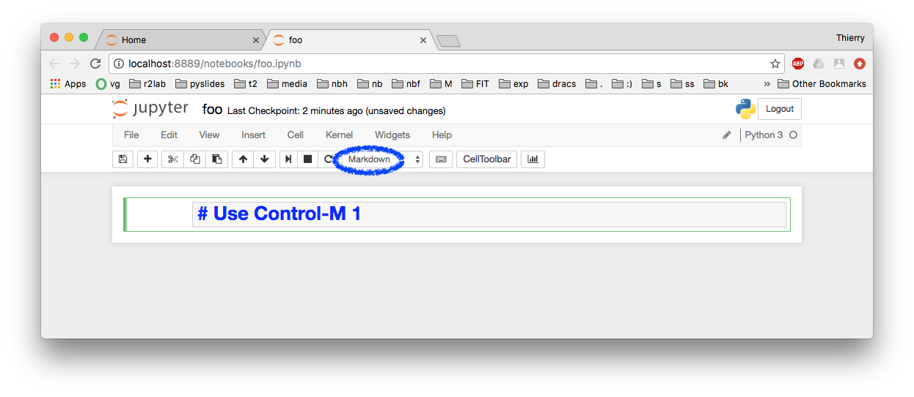
il y a aussi des raccourcis pratiques pour créer directement des sections
Control-M 1met la cellule en markdown, et insère si nécessaire un#au début de la cellule; on crée ainsi une cellule de titre de rang 1Control-M 2: de rang 2, etc…
insérer une cellule; souvent on fait aussi/plutôt
⌥-Enterpour évaluer la cellule et en insérer une dessous
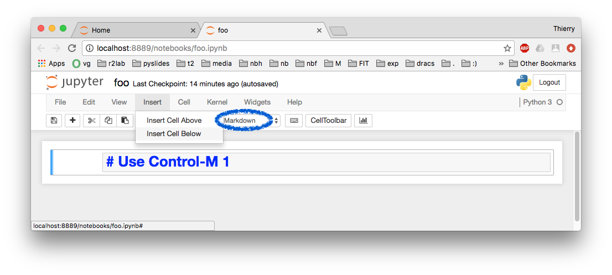
une cellule de code
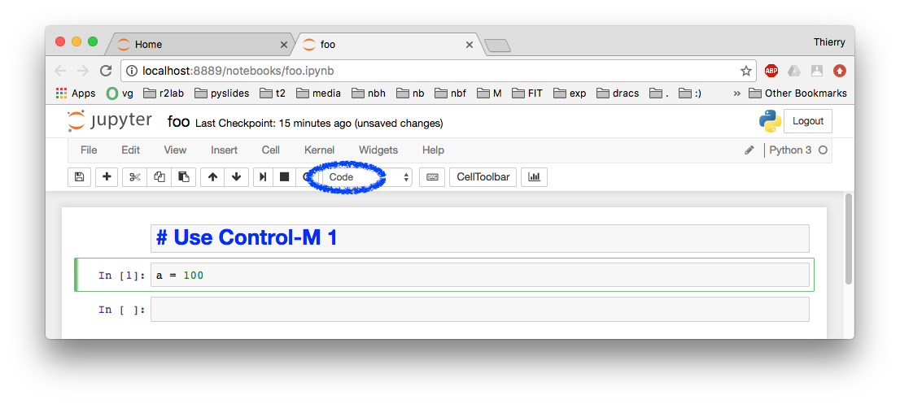
on est toujours dans un des deux modes :
édition : pour changer le contenu d’une cellule
commande : pour voir le résultat
la couleur du bandeau vous dit dans quel mode vous êtes
pour sortir du mode édition : tapez
Escapeou encoreControl-M
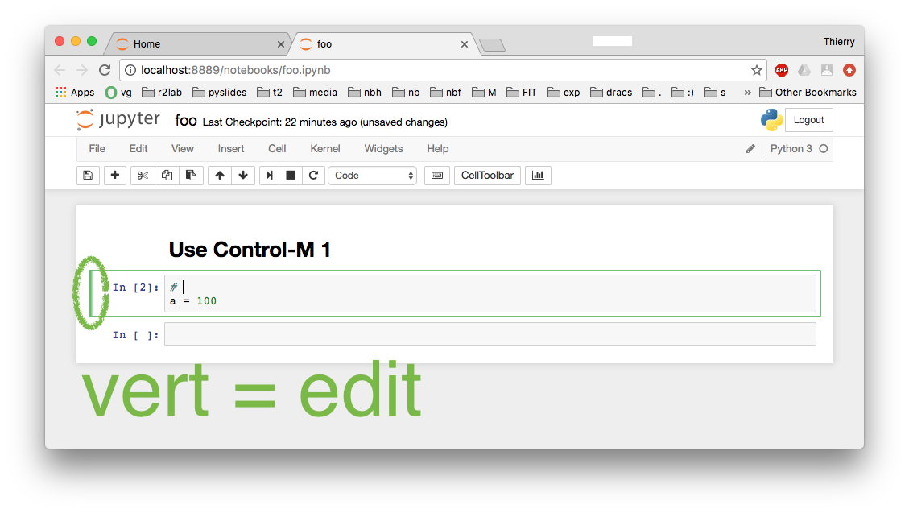
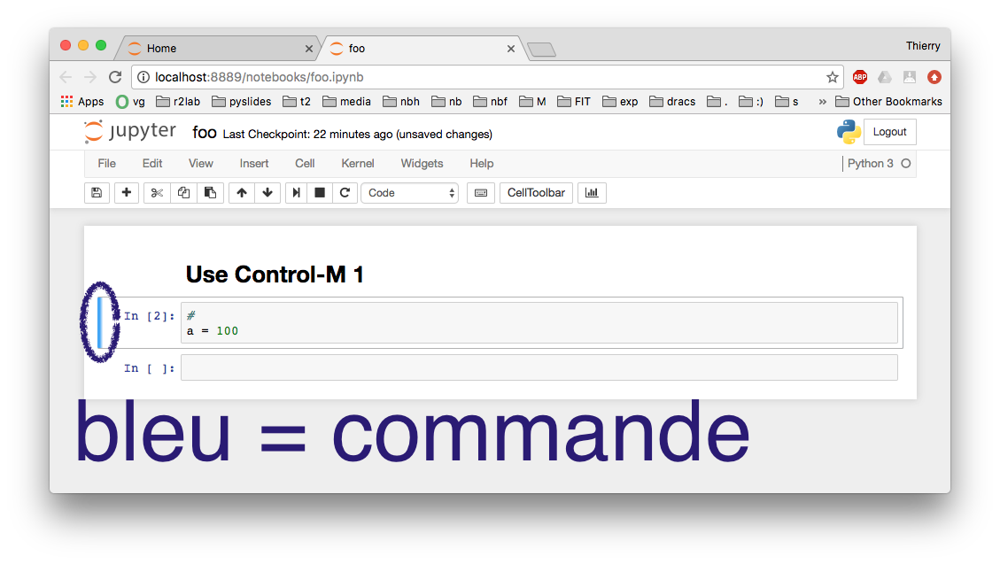
à partir du menu, faites Help → Keyboard Shortcuts
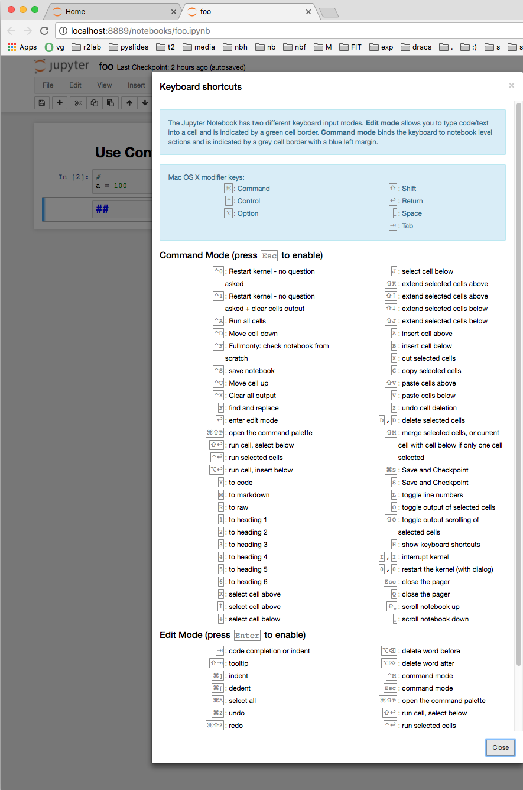
sélection multiple
en général on a exactement une cellule courante
mais avec
Shift-⬆ouShift-⬇on peut sélectionner plusieurs cellules contigües
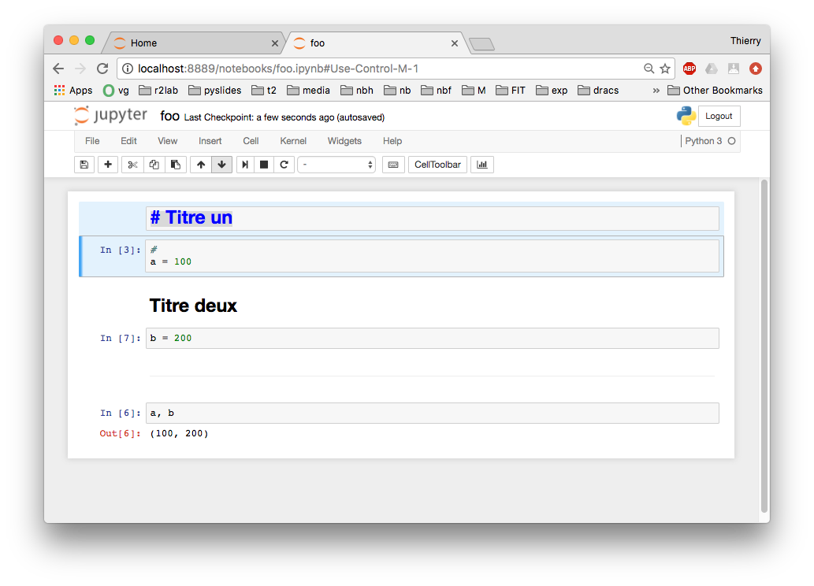
du coup on peut par exemple les déplacer toutes ensemble
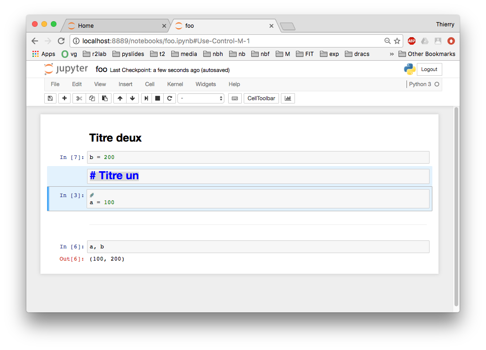
lire le cours localement (sur votre portable)¶
prérequis¶
indispensable¶
pour pouvoir ouvrir un notebook du cours - n’importe lequel - il faut avoir fait ceci
pip install jupytext
autrement, vous allez avoir un affichage bizarre…
utile pour ce notebook¶
pour pouvoir exécuter les notebooks en bash (dont celui-ci, donc), il vous faut également faire
pip install calysto_bash
épilogue¶
à ce stade vous avez tout ce qu’il faut pour tout mettre ensemble, c’est-à-dire :
cloner le repo du cours
lancer jupyter à la racine
puis vous pouvez
ouvrir le notebook de démonstration (0-10-demonstration.md)
(je ne recommande pas forcément de commencer avec le présent notebook, car il utilise un kernelbashqui n’est pas standard…)l’exécuter localement
et vous amuser à le modifier
je vous demande surtout de
ouvrir le notebook de checklist, qui résume les compétences attendues
et vérifier que vous avez bien tout installé
et si vous êtes en avance, attaquez-vous à l’exercice qui figure à la fin de la checklist
jupyter lab¶
pour les curieux, sachez qu’il existe une nouvelle interface Jupyter qui s’appelle JupyterLab
c’est un plus moderne que Jupyter classic que nous utilisons, mais c’est beaucoup plus compliqué à intégrer… quoi qu’il en soit, si vous voulez jeter un coup d’oeil à cet outil, il faut savoir que
on le lance en tapant
jupyter labau lieu dejupyter notebooket pour ouvrir un notebook en
.md- comme ceux du cours donc - on ne peut pas double-cliquer dans le .md, il faut utiliserOpen withcomme ceci
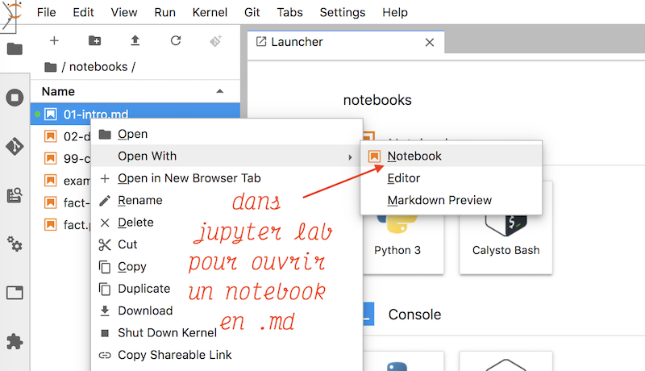
Partie optionnelle
Python et vs-code¶
si vous avez le temps (section intermédiaire)
maintenant qu’on a installé Python, on peut retourner dans vs-code pour voir à quoi ressemble l’extension Python (vérifiez que vous l’avez bien installée)
il y a quelques réglages à faire la toute première fois qu’on s’en sert, voyons cela :
pylint¶
pylintest un outil pour trouver les erreurs dans le code Pythonil détecte beaucoup d’erreurs (erreurs de syntaxe, variables mal orthographiées, etc..)
vs-code vous montre les erreurs :
l’extension Python de vs-code permet d’afficher en permanence (à chaque sauvegarde) les soucis détectés par
pylintc’est pourquoi si
pylintn’est pas installé, vs-code va automatiquement vous proposer de le faire (choisissez alors de préférence l’option install with pip)
pour information, le terme lint ou linter désigne, de manière générique, un outil qui
fait des vérifications statiques (i.e. sans faire tourner le code); ça existe pour
beaucoup de langages
l’interpréteur Python¶
vs-code a besoin de savoir où est installé Python, pour pouvoir le lancer
ne serait-ce que pour lancer pylint,
mais il peut aussi, dans un usage plus avancé, vous aider à exécuter votre code;
bref il a besoin de savoir où se trouve l’interpréteur Python
en fait il est malin et il sait trouver tous les interpréteurs qui sont installés
et donc ce dont il a besoin c’est que vous lui disiez lequel vous voulez utiliser
lorsqu’on fait du développement professionnel, on a habituellement une installation Python par projet; une partie optionnelle avancée sera consacrée à ce sujet un peu plus loin
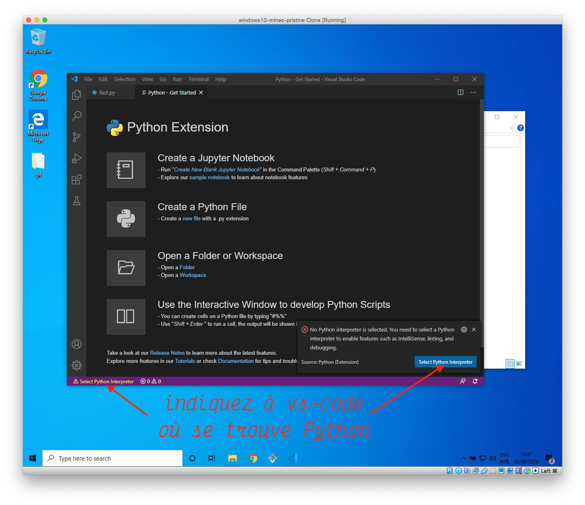
voir les erreurs¶
votre premier objectif est de pouvoir trouver les erreurs visuellement au fur et à mesure que vous écrivez votre code Python
dans l’illustration suivante j’ai fait exprès d’importer le module mathematic qui est
fantaisiste (on verra que la librarie mathématique s’appelle en fait simplement math)
si votre installation est correcte vous devez pouvoir sauver un fichier qui se termine en
.py, et si vous y insérez la même erreur (et que vous sauvez le fichier) vous devez voir
apparaître un zigouigoui comme ceci 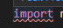
lorsque le texte est souligné de cette manière, cela indique une erreur; apprenez à les lire et à les corriger avant même d’essayer de faire tourner votre code, cela vous fera gagner du temps
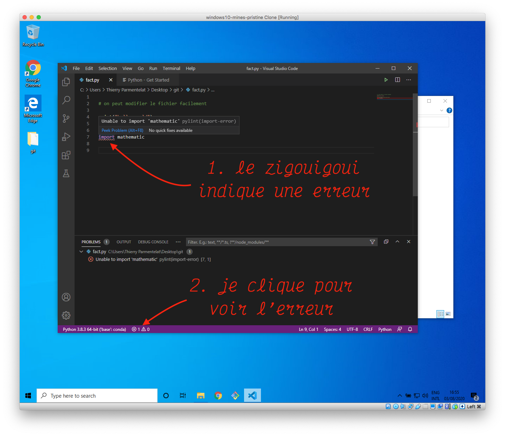
Avertissement
Il faut toutefois toujours garder à l’esprit que cette phase de détection préliminaire des erreurs de programmation n’a qu’une valeur indicative
pylint fait tous ses efforts pour vous faire gagner du temps en trouvant le maximum
d’erreurs le plus tôt possible, mais :
ce n’est pas parce qu’un programme n’a pas de zigouigoui qu’il va tourner à coup sûr
et réciproquement, il y a des programmes qui tournent alors qu’ils ont exhibé des erreurs
donc il faut garder votre cerveau en marche, et ne pas se fier aveuglément à cette information
extensions Jupyter¶
si vous avez le temps (section intermédiaire)
vous remarquerez que certaines features, disponibles sur nbhosting, ne le sont pas sur votre ordinateur à ce stade; par exemple, les codes de couleur des cellules par niveau, ou la table des matières navigable sur le coté
Jupyter est un système extensible; sur nbhosting on a activé quelques-unes de ces extensions, et voici comment vous pouvez les activer également de votre côté
# d'abord on installe les extensions standard
pip install -U ipywidgets
jupyter nbextension enable --py widgetsnbextension
pip install -U jupyter_contrib_nbextensions
jupyter contrib nbextension install
Requirement already satisfied: ipywidgets in /usr/share/miniconda/envs/python-numérique/lib/python3.9/site-packages (7.6.3)
Requirement already satisfied: jupyterlab-widgets>=1.0.0 in /usr/share/miniconda/envs/python-numérique/lib/python3.9/site-packages (from ipywidgets) (1.0.0)
Requirement already satisfied: ipython>=4.0.0 in /usr/share/miniconda/envs/python-numérique/lib/python3.9/site-packages (from ipywidgets) (7.25.0)
Requirement already satisfied: traitlets>=4.3.1 in /usr/share/miniconda/envs/python-numérique/lib/python3.9/site-packages (from ipywidgets) (5.0.5)
Requirement already satisfied: nbformat>=4.2.0 in /usr/share/miniconda/envs/python-numérique/lib/python3.9/site-packages (from ipywidgets) (5.1.3)
Requirement already satisfied: ipykernel>=4.5.1 in /usr/share/miniconda/envs/python-numérique/lib/python3.9/site-packages (from ipywidgets) (6.0.3)
Requirement already satisfied: widgetsnbextension~=3.5.0 in /usr/share/miniconda/envs/python-numérique/lib/python3.9/site-packages (from ipywidgets) (3.5.1)
Requirement already satisfied: debugpy<2.0,>=1.0.0 in /usr/share/miniconda/envs/python-numérique/lib/python3.9/site-packages (from ipykernel>=4.5.1->ipywidgets) (1.4.1)
Requirement already satisfied: matplotlib-inline<0.2.0,>=0.1.0 in /usr/share/miniconda/envs/python-numérique/lib/python3.9/site-packages (from ipykernel>=4.5.1->ipywidgets) (0.1.2)
Requirement already satisfied: tornado<7.0,>=4.2 in /usr/share/miniconda/envs/python-numérique/lib/python3.9/site-packages (from ipykernel>=4.5.1->ipywidgets) (6.1)
Requirement already satisfied: jupyter-client<7.0 in /usr/share/miniconda/envs/python-numérique/lib/python3.9/site-packages (from ipykernel>=4.5.1->ipywidgets) (6.1.12)
Requirement already satisfied: pygments in /usr/share/miniconda/envs/python-numérique/lib/python3.9/site-packages (from ipython>=4.0.0->ipywidgets) (2.9.0)
Requirement already satisfied: pickleshare in /usr/share/miniconda/envs/python-numérique/lib/python3.9/site-packages (from ipython>=4.0.0->ipywidgets) (0.7.5)
Requirement already satisfied: decorator in /usr/share/miniconda/envs/python-numérique/lib/python3.9/site-packages (from ipython>=4.0.0->ipywidgets) (5.0.9)
Requirement already satisfied: setuptools>=18.5 in /usr/share/miniconda/envs/python-numérique/lib/python3.9/site-packages (from ipython>=4.0.0->ipywidgets) (52.0.0.post20210125)
Requirement already satisfied: prompt-toolkit!=3.0.0,!=3.0.1,<3.1.0,>=2.0.0 in /usr/share/miniconda/envs/python-numérique/lib/python3.9/site-packages (from ipython>=4.0.0->ipywidgets) (3.0.19)
Requirement already satisfied: backcall in /usr/share/miniconda/envs/python-numérique/lib/python3.9/site-packages (from ipython>=4.0.0->ipywidgets) (0.2.0)
Requirement already satisfied: pexpect>4.3 in /usr/share/miniconda/envs/python-numérique/lib/python3.9/site-packages (from ipython>=4.0.0->ipywidgets) (4.8.0)
Requirement already satisfied: jedi>=0.16 in /usr/share/miniconda/envs/python-numérique/lib/python3.9/site-packages (from ipython>=4.0.0->ipywidgets) (0.18.0)
Requirement already satisfied: parso<0.9.0,>=0.8.0 in /usr/share/miniconda/envs/python-numérique/lib/python3.9/site-packages (from jedi>=0.16->ipython>=4.0.0->ipywidgets) (0.8.2)
Requirement already satisfied: jupyter-core>=4.6.0 in /usr/share/miniconda/envs/python-numérique/lib/python3.9/site-packages (from jupyter-client<7.0->ipykernel>=4.5.1->ipywidgets) (4.7.1)
Requirement already satisfied: python-dateutil>=2.1 in /usr/share/miniconda/envs/python-numérique/lib/python3.9/site-packages (from jupyter-client<7.0->ipykernel>=4.5.1->ipywidgets) (2.8.2)
Requirement already satisfied: pyzmq>=13 in /usr/share/miniconda/envs/python-numérique/lib/python3.9/site-packages (from jupyter-client<7.0->ipykernel>=4.5.1->ipywidgets) (22.1.0)
Requirement already satisfied: ipython-genutils in /usr/share/miniconda/envs/python-numérique/lib/python3.9/site-packages (from nbformat>=4.2.0->ipywidgets) (0.2.0)
Requirement already satisfied: jsonschema!=2.5.0,>=2.4 in /usr/share/miniconda/envs/python-numérique/lib/python3.9/site-packages (from nbformat>=4.2.0->ipywidgets) (3.2.0)
Requirement already satisfied: pyrsistent>=0.14.0 in /usr/share/miniconda/envs/python-numérique/lib/python3.9/site-packages (from jsonschema!=2.5.0,>=2.4->nbformat>=4.2.0->ipywidgets) (0.18.0)
Requirement already satisfied: six>=1.11.0 in /usr/share/miniconda/envs/python-numérique/lib/python3.9/site-packages (from jsonschema!=2.5.0,>=2.4->nbformat>=4.2.0->ipywidgets) (1.16.0)
Requirement already satisfied: attrs>=17.4.0 in /usr/share/miniconda/envs/python-numérique/lib/python3.9/site-packages (from jsonschema!=2.5.0,>=2.4->nbformat>=4.2.0->ipywidgets) (20.3.0)
Requirement already satisfied: ptyprocess>=0.5 in /usr/share/miniconda/envs/python-numérique/lib/python3.9/site-packages (from pexpect>4.3->ipython>=4.0.0->ipywidgets) (0.7.0)
Requirement already satisfied: wcwidth in /usr/share/miniconda/envs/python-numérique/lib/python3.9/site-packages (from prompt-toolkit!=3.0.0,!=3.0.1,<3.1.0,>=2.0.0->ipython>=4.0.0->ipywidgets) (0.2.5)
Requirement already satisfied: notebook>=4.4.1 in /usr/share/miniconda/envs/python-numérique/lib/python3.9/site-packages (from widgetsnbextension~=3.5.0->ipywidgets) (6.4.0)
Requirement already satisfied: prometheus-client in /usr/share/miniconda/envs/python-numérique/lib/python3.9/site-packages (from notebook>=4.4.1->widgetsnbextension~=3.5.0->ipywidgets) (0.11.0)
Requirement already satisfied: Send2Trash>=1.5.0 in /usr/share/miniconda/envs/python-numérique/lib/python3.9/site-packages (from notebook>=4.4.1->widgetsnbextension~=3.5.0->ipywidgets) (1.7.1)
Requirement already satisfied: terminado>=0.8.3 in /usr/share/miniconda/envs/python-numérique/lib/python3.9/site-packages (from notebook>=4.4.1->widgetsnbextension~=3.5.0->ipywidgets) (0.10.1)
Requirement already satisfied: argon2-cffi in /usr/share/miniconda/envs/python-numérique/lib/python3.9/site-packages (from notebook>=4.4.1->widgetsnbextension~=3.5.0->ipywidgets) (20.1.0)
Requirement already satisfied: jinja2 in /usr/share/miniconda/envs/python-numérique/lib/python3.9/site-packages (from notebook>=4.4.1->widgetsnbextension~=3.5.0->ipywidgets) (3.0.1)
Requirement already satisfied: nbconvert in /usr/share/miniconda/envs/python-numérique/lib/python3.9/site-packages (from notebook>=4.4.1->widgetsnbextension~=3.5.0->ipywidgets) (5.6.1)
Requirement already satisfied: cffi>=1.0.0 in /usr/share/miniconda/envs/python-numérique/lib/python3.9/site-packages (from argon2-cffi->notebook>=4.4.1->widgetsnbextension~=3.5.0->ipywidgets) (1.14.6)
Requirement already satisfied: pycparser in /usr/share/miniconda/envs/python-numérique/lib/python3.9/site-packages (from cffi>=1.0.0->argon2-cffi->notebook>=4.4.1->widgetsnbextension~=3.5.0->ipywidgets) (2.20)
Requirement already satisfied: MarkupSafe>=2.0 in /usr/share/miniconda/envs/python-numérique/lib/python3.9/site-packages (from jinja2->notebook>=4.4.1->widgetsnbextension~=3.5.0->ipywidgets) (2.0.1)
Requirement already satisfied: pandocfilters>=1.4.1 in /usr/share/miniconda/envs/python-numérique/lib/python3.9/site-packages (from nbconvert->notebook>=4.4.1->widgetsnbextension~=3.5.0->ipywidgets) (1.4.3)
Requirement already satisfied: mistune<2,>=0.8.1 in /usr/share/miniconda/envs/python-numérique/lib/python3.9/site-packages (from nbconvert->notebook>=4.4.1->widgetsnbextension~=3.5.0->ipywidgets) (0.8.4)
Requirement already satisfied: entrypoints>=0.2.2 in /usr/share/miniconda/envs/python-numérique/lib/python3.9/site-packages (from nbconvert->notebook>=4.4.1->widgetsnbextension~=3.5.0->ipywidgets) (0.3)
Requirement already satisfied: testpath in /usr/share/miniconda/envs/python-numérique/lib/python3.9/site-packages (from nbconvert->notebook>=4.4.1->widgetsnbextension~=3.5.0->ipywidgets) (0.5.0)
Requirement already satisfied: defusedxml in /usr/share/miniconda/envs/python-numérique/lib/python3.9/site-packages (from nbconvert->notebook>=4.4.1->widgetsnbextension~=3.5.0->ipywidgets) (0.7.1)
Requirement already satisfied: bleach in /usr/share/miniconda/envs/python-numérique/lib/python3.9/site-packages (from nbconvert->notebook>=4.4.1->widgetsnbextension~=3.5.0->ipywidgets) (3.3.1)
Requirement already satisfied: packaging in /usr/share/miniconda/envs/python-numérique/lib/python3.9/site-packages (from bleach->nbconvert->notebook>=4.4.1->widgetsnbextension~=3.5.0->ipywidgets) (21.0)
Requirement already satisfied: webencodings in /usr/share/miniconda/envs/python-numérique/lib/python3.9/site-packages (from bleach->nbconvert->notebook>=4.4.1->widgetsnbextension~=3.5.0->ipywidgets) (0.5.1)
Requirement already satisfied: pyparsing>=2.0.2 in /usr/share/miniconda/envs/python-numérique/lib/python3.9/site-packages (from packaging->bleach->nbconvert->notebook>=4.4.1->widgetsnbextension~=3.5.0->ipywidgets) (2.4.7)
Enabling notebook extension jupyter-js-widgets/extension...
- Validating: OK
Requirement already satisfied: jupyter_contrib_nbextensions in /usr/share/miniconda/envs/python-numérique/lib/python3.9/site-packages (0.5.1)
Requirement already satisfied: nbconvert>=4.2 in /usr/share/miniconda/envs/python-numérique/lib/python3.9/site-packages (from jupyter_contrib_nbextensions) (5.6.1)
Requirement already satisfied: notebook>=4.0 in /usr/share/miniconda/envs/python-numérique/lib/python3.9/site-packages (from jupyter_contrib_nbextensions) (6.4.0)
Requirement already satisfied: jupyter-highlight-selected-word>=0.1.1 in /usr/share/miniconda/envs/python-numérique/lib/python3.9/site-packages (from jupyter_contrib_nbextensions) (0.2.0)
Requirement already satisfied: jupyter-contrib-core>=0.3.3 in /usr/share/miniconda/envs/python-numérique/lib/python3.9/site-packages (from jupyter_contrib_nbextensions) (0.3.3)
Requirement already satisfied: jupyter-latex-envs>=1.3.8 in /usr/share/miniconda/envs/python-numérique/lib/python3.9/site-packages (from jupyter_contrib_nbextensions) (1.4.6)
Requirement already satisfied: jupyter-nbextensions-configurator>=0.4.0 in /usr/share/miniconda/envs/python-numérique/lib/python3.9/site-packages (from jupyter_contrib_nbextensions) (0.4.1)
Requirement already satisfied: lxml in /usr/share/miniconda/envs/python-numérique/lib/python3.9/site-packages (from jupyter_contrib_nbextensions) (4.6.3)
Requirement already satisfied: pyyaml in /usr/share/miniconda/envs/python-numérique/lib/python3.9/site-packages (from jupyter_contrib_nbextensions) (5.4.1)
Requirement already satisfied: traitlets>=4.1 in /usr/share/miniconda/envs/python-numérique/lib/python3.9/site-packages (from jupyter_contrib_nbextensions) (5.0.5)
Requirement already satisfied: jupyter-core in /usr/share/miniconda/envs/python-numérique/lib/python3.9/site-packages (from jupyter_contrib_nbextensions) (4.7.1)
Requirement already satisfied: tornado in /usr/share/miniconda/envs/python-numérique/lib/python3.9/site-packages (from jupyter_contrib_nbextensions) (6.1)
Requirement already satisfied: ipython-genutils in /usr/share/miniconda/envs/python-numérique/lib/python3.9/site-packages (from jupyter_contrib_nbextensions) (0.2.0)
Requirement already satisfied: setuptools in /usr/share/miniconda/envs/python-numérique/lib/python3.9/site-packages (from jupyter-contrib-core>=0.3.3->jupyter_contrib_nbextensions) (52.0.0.post20210125)
Requirement already satisfied: ipython in /usr/share/miniconda/envs/python-numérique/lib/python3.9/site-packages (from jupyter-latex-envs>=1.3.8->jupyter_contrib_nbextensions) (7.25.0)
Requirement already satisfied: bleach in /usr/share/miniconda/envs/python-numérique/lib/python3.9/site-packages (from nbconvert>=4.2->jupyter_contrib_nbextensions) (3.3.1)
Requirement already satisfied: nbformat>=4.4 in /usr/share/miniconda/envs/python-numérique/lib/python3.9/site-packages (from nbconvert>=4.2->jupyter_contrib_nbextensions) (5.1.3)
Requirement already satisfied: jinja2>=2.4 in /usr/share/miniconda/envs/python-numérique/lib/python3.9/site-packages (from nbconvert>=4.2->jupyter_contrib_nbextensions) (3.0.1)
Requirement already satisfied: testpath in /usr/share/miniconda/envs/python-numérique/lib/python3.9/site-packages (from nbconvert>=4.2->jupyter_contrib_nbextensions) (0.5.0)
Requirement already satisfied: defusedxml in /usr/share/miniconda/envs/python-numérique/lib/python3.9/site-packages (from nbconvert>=4.2->jupyter_contrib_nbextensions) (0.7.1)
Requirement already satisfied: entrypoints>=0.2.2 in /usr/share/miniconda/envs/python-numérique/lib/python3.9/site-packages (from nbconvert>=4.2->jupyter_contrib_nbextensions) (0.3)
Requirement already satisfied: pandocfilters>=1.4.1 in /usr/share/miniconda/envs/python-numérique/lib/python3.9/site-packages (from nbconvert>=4.2->jupyter_contrib_nbextensions) (1.4.3)
Requirement already satisfied: mistune<2,>=0.8.1 in /usr/share/miniconda/envs/python-numérique/lib/python3.9/site-packages (from nbconvert>=4.2->jupyter_contrib_nbextensions) (0.8.4)
Requirement already satisfied: pygments in /usr/share/miniconda/envs/python-numérique/lib/python3.9/site-packages (from nbconvert>=4.2->jupyter_contrib_nbextensions) (2.9.0)
Requirement already satisfied: MarkupSafe>=2.0 in /usr/share/miniconda/envs/python-numérique/lib/python3.9/site-packages (from jinja2>=2.4->nbconvert>=4.2->jupyter_contrib_nbextensions) (2.0.1)
Requirement already satisfied: jsonschema!=2.5.0,>=2.4 in /usr/share/miniconda/envs/python-numérique/lib/python3.9/site-packages (from nbformat>=4.4->nbconvert>=4.2->jupyter_contrib_nbextensions) (3.2.0)
Requirement already satisfied: pyrsistent>=0.14.0 in /usr/share/miniconda/envs/python-numérique/lib/python3.9/site-packages (from jsonschema!=2.5.0,>=2.4->nbformat>=4.4->nbconvert>=4.2->jupyter_contrib_nbextensions) (0.18.0)
Requirement already satisfied: six>=1.11.0 in /usr/share/miniconda/envs/python-numérique/lib/python3.9/site-packages (from jsonschema!=2.5.0,>=2.4->nbformat>=4.4->nbconvert>=4.2->jupyter_contrib_nbextensions) (1.16.0)
Requirement already satisfied: attrs>=17.4.0 in /usr/share/miniconda/envs/python-numérique/lib/python3.9/site-packages (from jsonschema!=2.5.0,>=2.4->nbformat>=4.4->nbconvert>=4.2->jupyter_contrib_nbextensions) (20.3.0)
Requirement already satisfied: terminado>=0.8.3 in /usr/share/miniconda/envs/python-numérique/lib/python3.9/site-packages (from notebook>=4.0->jupyter_contrib_nbextensions) (0.10.1)
Requirement already satisfied: jupyter-client>=5.3.4 in /usr/share/miniconda/envs/python-numérique/lib/python3.9/site-packages (from notebook>=4.0->jupyter_contrib_nbextensions) (6.1.12)
Requirement already satisfied: ipykernel in /usr/share/miniconda/envs/python-numérique/lib/python3.9/site-packages (from notebook>=4.0->jupyter_contrib_nbextensions) (6.0.3)
Requirement already satisfied: Send2Trash>=1.5.0 in /usr/share/miniconda/envs/python-numérique/lib/python3.9/site-packages (from notebook>=4.0->jupyter_contrib_nbextensions) (1.7.1)
Requirement already satisfied: prometheus-client in /usr/share/miniconda/envs/python-numérique/lib/python3.9/site-packages (from notebook>=4.0->jupyter_contrib_nbextensions) (0.11.0)
Requirement already satisfied: pyzmq>=17 in /usr/share/miniconda/envs/python-numérique/lib/python3.9/site-packages (from notebook>=4.0->jupyter_contrib_nbextensions) (22.1.0)
Requirement already satisfied: argon2-cffi in /usr/share/miniconda/envs/python-numérique/lib/python3.9/site-packages (from notebook>=4.0->jupyter_contrib_nbextensions) (20.1.0)
Requirement already satisfied: python-dateutil>=2.1 in /usr/share/miniconda/envs/python-numérique/lib/python3.9/site-packages (from jupyter-client>=5.3.4->notebook>=4.0->jupyter_contrib_nbextensions) (2.8.2)
Requirement already satisfied: ptyprocess in /usr/share/miniconda/envs/python-numérique/lib/python3.9/site-packages (from terminado>=0.8.3->notebook>=4.0->jupyter_contrib_nbextensions) (0.7.0)
Requirement already satisfied: cffi>=1.0.0 in /usr/share/miniconda/envs/python-numérique/lib/python3.9/site-packages (from argon2-cffi->notebook>=4.0->jupyter_contrib_nbextensions) (1.14.6)
Requirement already satisfied: pycparser in /usr/share/miniconda/envs/python-numérique/lib/python3.9/site-packages (from cffi>=1.0.0->argon2-cffi->notebook>=4.0->jupyter_contrib_nbextensions) (2.20)
Requirement already satisfied: packaging in /usr/share/miniconda/envs/python-numérique/lib/python3.9/site-packages (from bleach->nbconvert>=4.2->jupyter_contrib_nbextensions) (21.0)
Requirement already satisfied: webencodings in /usr/share/miniconda/envs/python-numérique/lib/python3.9/site-packages (from bleach->nbconvert>=4.2->jupyter_contrib_nbextensions) (0.5.1)
Requirement already satisfied: debugpy<2.0,>=1.0.0 in /usr/share/miniconda/envs/python-numérique/lib/python3.9/site-packages (from ipykernel->notebook>=4.0->jupyter_contrib_nbextensions) (1.4.1)
Requirement already satisfied: matplotlib-inline<0.2.0,>=0.1.0 in /usr/share/miniconda/envs/python-numérique/lib/python3.9/site-packages (from ipykernel->notebook>=4.0->jupyter_contrib_nbextensions) (0.1.2)
Requirement already satisfied: prompt-toolkit!=3.0.0,!=3.0.1,<3.1.0,>=2.0.0 in /usr/share/miniconda/envs/python-numérique/lib/python3.9/site-packages (from ipython->jupyter-latex-envs>=1.3.8->jupyter_contrib_nbextensions) (3.0.19)
Requirement already satisfied: jedi>=0.16 in /usr/share/miniconda/envs/python-numérique/lib/python3.9/site-packages (from ipython->jupyter-latex-envs>=1.3.8->jupyter_contrib_nbextensions) (0.18.0)
Requirement already satisfied: decorator in /usr/share/miniconda/envs/python-numérique/lib/python3.9/site-packages (from ipython->jupyter-latex-envs>=1.3.8->jupyter_contrib_nbextensions) (5.0.9)
Requirement already satisfied: pickleshare in /usr/share/miniconda/envs/python-numérique/lib/python3.9/site-packages (from ipython->jupyter-latex-envs>=1.3.8->jupyter_contrib_nbextensions) (0.7.5)
Requirement already satisfied: pexpect>4.3 in /usr/share/miniconda/envs/python-numérique/lib/python3.9/site-packages (from ipython->jupyter-latex-envs>=1.3.8->jupyter_contrib_nbextensions) (4.8.0)
Requirement already satisfied: backcall in /usr/share/miniconda/envs/python-numérique/lib/python3.9/site-packages (from ipython->jupyter-latex-envs>=1.3.8->jupyter_contrib_nbextensions) (0.2.0)
Requirement already satisfied: parso<0.9.0,>=0.8.0 in /usr/share/miniconda/envs/python-numérique/lib/python3.9/site-packages (from jedi>=0.16->ipython->jupyter-latex-envs>=1.3.8->jupyter_contrib_nbextensions) (0.8.2)
Requirement already satisfied: wcwidth in /usr/share/miniconda/envs/python-numérique/lib/python3.9/site-packages (from prompt-toolkit!=3.0.0,!=3.0.1,<3.1.0,>=2.0.0->ipython->jupyter-latex-envs>=1.3.8->jupyter_contrib_nbextensions) (0.2.5)
Requirement already satisfied: pyparsing>=2.0.2 in /usr/share/miniconda/envs/python-numérique/lib/python3.9/site-packages (from packaging->bleach->nbconvert>=4.2->jupyter_contrib_nbextensions) (2.4.7)
[I 17:25:51 InstallContribNbextensionsApp] jupyter contrib nbextension install
[I 17:25:51 InstallContribNbextensionsApp] Installing jupyter_contrib_nbextensions nbextension files to jupyter data directory
[I 17:25:51 InstallContribNbextensionsApp] Installing /usr/share/miniconda/envs/python-numérique/lib/python3.9/site-packages/jupyter_contrib_nbextensions/nbextensions/contrib_nbextensions_help_item -> contrib_nbextensions_help_item
Traceback (most recent call last):
File "/usr/share/miniconda/envs/python-numérique/bin/jupyter-contrib", line 8, in <module>
sys.exit(main())
File "/usr/share/miniconda/envs/python-numérique/lib/python3.9/site-packages/jupyter_core/application.py", line 254, in launch_instance
return super(JupyterApp, cls).launch_instance(argv=argv, **kwargs)
File "/usr/share/miniconda/envs/python-numérique/lib/python3.9/site-packages/traitlets/config/application.py", line 845, in launch_instance
app.start()
File "/usr/share/miniconda/envs/python-numérique/lib/python3.9/site-packages/jupyter_contrib_core/application.py", line 50, in start
super(JupyterContribApp, self).start()
File "/usr/share/miniconda/envs/python-numérique/lib/python3.9/site-packages/jupyter_core/application.py", line 243, in start
self.subapp.start()
File "/usr/share/miniconda/envs/python-numérique/lib/python3.9/site-packages/jupyter_contrib_nbextensions/application.py", line 231, in start
super(ContribNbextensionsApp, self).start()
File "/usr/share/miniconda/envs/python-numérique/lib/python3.9/site-packages/jupyter_core/application.py", line 243, in start
self.subapp.start()
File "/usr/share/miniconda/envs/python-numérique/lib/python3.9/site-packages/jupyter_contrib_nbextensions/application.py", line 178, in start
toggle_install_files(self._toggle_value, **kwargs_files)
File "/usr/share/miniconda/envs/python-numérique/lib/python3.9/site-packages/jupyter_contrib_nbextensions/install.py", line 74, in toggle_install_files
nbextensions.install_nbextension_python(
File "/usr/share/miniconda/envs/python-numérique/lib/python3.9/site-packages/notebook/nbextensions.py", line 214, in install_nbextension_python
full_dest = install_nbextension(
File "/usr/share/miniconda/envs/python-numérique/lib/python3.9/site-packages/notebook/nbextensions.py", line 118, in install_nbextension
ensure_dir_exists(nbext)
File "/usr/share/miniconda/envs/python-numérique/lib/python3.9/site-packages/jupyter_core/utils/__init__.py", line 11, in ensure_dir_exists
os.makedirs(path, mode=mode)
File "/usr/share/miniconda/envs/python-numérique/lib/python3.9/os.py", line 215, in makedirs
makedirs(head, exist_ok=exist_ok)
File "/usr/share/miniconda/envs/python-numérique/lib/python3.9/os.py", line 225, in makedirs
mkdir(name, mode)
PermissionError: [Errno 13] Permission denied: '/usr/local/share/jupyter'
# puis on active celles qui nous intéressent
# la table des matières navigable
jupyter nbextension enable toc2/main
# les cellules qui ne prennent que la moitié de la largeur
jupyter nbextension enable splitcell/splitcell
# les codes de couleur
pip install nb-courselevels
jupyter nbextension enable courselevels/index
Enabling notebook extension toc2/main...
- Validating: problems found:
- require? X toc2/main
Enabling notebook extension splitcell/splitcell...
- Validating: problems found:
- require? X splitcell/splitcell
Collecting nb-courselevels
Downloading nb_courselevels-0.4.0-py3-none-any.whl (8.9 kB)
Requirement already satisfied: jupyter-nbextensions-configurator in /usr/share/miniconda/envs/python-numérique/lib/python3.9/site-packages (from nb-courselevels) (0.4.1)
Requirement already satisfied: notebook in /usr/share/miniconda/envs/python-numérique/lib/python3.9/site-packages (from nb-courselevels) (6.4.0)
Requirement already satisfied: traitlets in /usr/share/miniconda/envs/python-numérique/lib/python3.9/site-packages (from jupyter-nbextensions-configurator->nb-courselevels) (5.0.5)
Requirement already satisfied: jupyter-contrib-core>=0.3.3 in /usr/share/miniconda/envs/python-numérique/lib/python3.9/site-packages (from jupyter-nbextensions-configurator->nb-courselevels) (0.3.3)
Requirement already satisfied: tornado in /usr/share/miniconda/envs/python-numérique/lib/python3.9/site-packages (from jupyter-nbextensions-configurator->nb-courselevels) (6.1)
Requirement already satisfied: jupyter-core in /usr/share/miniconda/envs/python-numérique/lib/python3.9/site-packages (from jupyter-nbextensions-configurator->nb-courselevels) (4.7.1)
Requirement already satisfied: pyyaml in /usr/share/miniconda/envs/python-numérique/lib/python3.9/site-packages (from jupyter-nbextensions-configurator->nb-courselevels) (5.4.1)
Requirement already satisfied: setuptools in /usr/share/miniconda/envs/python-numérique/lib/python3.9/site-packages (from jupyter-contrib-core>=0.3.3->jupyter-nbextensions-configurator->nb-courselevels) (52.0.0.post20210125)
Requirement already satisfied: Send2Trash>=1.5.0 in /usr/share/miniconda/envs/python-numérique/lib/python3.9/site-packages (from notebook->nb-courselevels) (1.7.1)
Requirement already satisfied: nbformat in /usr/share/miniconda/envs/python-numérique/lib/python3.9/site-packages (from notebook->nb-courselevels) (5.1.3)
Requirement already satisfied: argon2-cffi in /usr/share/miniconda/envs/python-numérique/lib/python3.9/site-packages (from notebook->nb-courselevels) (20.1.0)
Requirement already satisfied: ipykernel in /usr/share/miniconda/envs/python-numérique/lib/python3.9/site-packages (from notebook->nb-courselevels) (6.0.3)
Requirement already satisfied: pyzmq>=17 in /usr/share/miniconda/envs/python-numérique/lib/python3.9/site-packages (from notebook->nb-courselevels) (22.1.0)
Requirement already satisfied: ipython-genutils in /usr/share/miniconda/envs/python-numérique/lib/python3.9/site-packages (from notebook->nb-courselevels) (0.2.0)
Requirement already satisfied: jinja2 in /usr/share/miniconda/envs/python-numérique/lib/python3.9/site-packages (from notebook->nb-courselevels) (3.0.1)
Requirement already satisfied: prometheus-client in /usr/share/miniconda/envs/python-numérique/lib/python3.9/site-packages (from notebook->nb-courselevels) (0.11.0)
Requirement already satisfied: nbconvert in /usr/share/miniconda/envs/python-numérique/lib/python3.9/site-packages (from notebook->nb-courselevels) (5.6.1)
Requirement already satisfied: terminado>=0.8.3 in /usr/share/miniconda/envs/python-numérique/lib/python3.9/site-packages (from notebook->nb-courselevels) (0.10.1)
Requirement already satisfied: jupyter-client>=5.3.4 in /usr/share/miniconda/envs/python-numérique/lib/python3.9/site-packages (from notebook->nb-courselevels) (6.1.12)
Requirement already satisfied: python-dateutil>=2.1 in /usr/share/miniconda/envs/python-numérique/lib/python3.9/site-packages (from jupyter-client>=5.3.4->notebook->nb-courselevels) (2.8.2)
Requirement already satisfied: six>=1.5 in /usr/share/miniconda/envs/python-numérique/lib/python3.9/site-packages (from python-dateutil>=2.1->jupyter-client>=5.3.4->notebook->nb-courselevels) (1.16.0)
Requirement already satisfied: ptyprocess in /usr/share/miniconda/envs/python-numérique/lib/python3.9/site-packages (from terminado>=0.8.3->notebook->nb-courselevels) (0.7.0)
Requirement already satisfied: cffi>=1.0.0 in /usr/share/miniconda/envs/python-numérique/lib/python3.9/site-packages (from argon2-cffi->notebook->nb-courselevels) (1.14.6)
Requirement already satisfied: pycparser in /usr/share/miniconda/envs/python-numérique/lib/python3.9/site-packages (from cffi>=1.0.0->argon2-cffi->notebook->nb-courselevels) (2.20)
Requirement already satisfied: debugpy<2.0,>=1.0.0 in /usr/share/miniconda/envs/python-numérique/lib/python3.9/site-packages (from ipykernel->notebook->nb-courselevels) (1.4.1)
Requirement already satisfied: matplotlib-inline<0.2.0,>=0.1.0 in /usr/share/miniconda/envs/python-numérique/lib/python3.9/site-packages (from ipykernel->notebook->nb-courselevels) (0.1.2)
Requirement already satisfied: ipython<8.0,>=7.23.1 in /usr/share/miniconda/envs/python-numérique/lib/python3.9/site-packages (from ipykernel->notebook->nb-courselevels) (7.25.0)
Requirement already satisfied: decorator in /usr/share/miniconda/envs/python-numérique/lib/python3.9/site-packages (from ipython<8.0,>=7.23.1->ipykernel->notebook->nb-courselevels) (5.0.9)
Requirement already satisfied: backcall in /usr/share/miniconda/envs/python-numérique/lib/python3.9/site-packages (from ipython<8.0,>=7.23.1->ipykernel->notebook->nb-courselevels) (0.2.0)
Requirement already satisfied: pygments in /usr/share/miniconda/envs/python-numérique/lib/python3.9/site-packages (from ipython<8.0,>=7.23.1->ipykernel->notebook->nb-courselevels) (2.9.0)
Requirement already satisfied: prompt-toolkit!=3.0.0,!=3.0.1,<3.1.0,>=2.0.0 in /usr/share/miniconda/envs/python-numérique/lib/python3.9/site-packages (from ipython<8.0,>=7.23.1->ipykernel->notebook->nb-courselevels) (3.0.19)
Requirement already satisfied: pexpect>4.3 in /usr/share/miniconda/envs/python-numérique/lib/python3.9/site-packages (from ipython<8.0,>=7.23.1->ipykernel->notebook->nb-courselevels) (4.8.0)
Requirement already satisfied: jedi>=0.16 in /usr/share/miniconda/envs/python-numérique/lib/python3.9/site-packages (from ipython<8.0,>=7.23.1->ipykernel->notebook->nb-courselevels) (0.18.0)
Requirement already satisfied: pickleshare in /usr/share/miniconda/envs/python-numérique/lib/python3.9/site-packages (from ipython<8.0,>=7.23.1->ipykernel->notebook->nb-courselevels) (0.7.5)
Requirement already satisfied: parso<0.9.0,>=0.8.0 in /usr/share/miniconda/envs/python-numérique/lib/python3.9/site-packages (from jedi>=0.16->ipython<8.0,>=7.23.1->ipykernel->notebook->nb-courselevels) (0.8.2)
Requirement already satisfied: wcwidth in /usr/share/miniconda/envs/python-numérique/lib/python3.9/site-packages (from prompt-toolkit!=3.0.0,!=3.0.1,<3.1.0,>=2.0.0->ipython<8.0,>=7.23.1->ipykernel->notebook->nb-courselevels) (0.2.5)
Requirement already satisfied: MarkupSafe>=2.0 in /usr/share/miniconda/envs/python-numérique/lib/python3.9/site-packages (from jinja2->notebook->nb-courselevels) (2.0.1)
Requirement already satisfied: pandocfilters>=1.4.1 in /usr/share/miniconda/envs/python-numérique/lib/python3.9/site-packages (from nbconvert->notebook->nb-courselevels) (1.4.3)
Requirement already satisfied: mistune<2,>=0.8.1 in /usr/share/miniconda/envs/python-numérique/lib/python3.9/site-packages (from nbconvert->notebook->nb-courselevels) (0.8.4)
Requirement already satisfied: entrypoints>=0.2.2 in /usr/share/miniconda/envs/python-numérique/lib/python3.9/site-packages (from nbconvert->notebook->nb-courselevels) (0.3)
Requirement already satisfied: testpath in /usr/share/miniconda/envs/python-numérique/lib/python3.9/site-packages (from nbconvert->notebook->nb-courselevels) (0.5.0)
Requirement already satisfied: bleach in /usr/share/miniconda/envs/python-numérique/lib/python3.9/site-packages (from nbconvert->notebook->nb-courselevels) (3.3.1)
Requirement already satisfied: defusedxml in /usr/share/miniconda/envs/python-numérique/lib/python3.9/site-packages (from nbconvert->notebook->nb-courselevels) (0.7.1)
Requirement already satisfied: jsonschema!=2.5.0,>=2.4 in /usr/share/miniconda/envs/python-numérique/lib/python3.9/site-packages (from nbformat->notebook->nb-courselevels) (3.2.0)
Requirement already satisfied: pyrsistent>=0.14.0 in /usr/share/miniconda/envs/python-numérique/lib/python3.9/site-packages (from jsonschema!=2.5.0,>=2.4->nbformat->notebook->nb-courselevels) (0.18.0)
Requirement already satisfied: attrs>=17.4.0 in /usr/share/miniconda/envs/python-numérique/lib/python3.9/site-packages (from jsonschema!=2.5.0,>=2.4->nbformat->notebook->nb-courselevels) (20.3.0)
Requirement already satisfied: packaging in /usr/share/miniconda/envs/python-numérique/lib/python3.9/site-packages (from bleach->nbconvert->notebook->nb-courselevels) (21.0)
Requirement already satisfied: webencodings in /usr/share/miniconda/envs/python-numérique/lib/python3.9/site-packages (from bleach->nbconvert->notebook->nb-courselevels) (0.5.1)
Requirement already satisfied: pyparsing>=2.0.2 in /usr/share/miniconda/envs/python-numérique/lib/python3.9/site-packages (from packaging->bleach->nbconvert->notebook->nb-courselevels) (2.4.7)
Installing collected packages: nb-courselevels
Successfully installed nb-courselevels-0.4.0
Enabling notebook extension courselevels/index...
- Validating: OK
multiples environnements Python¶
pour ceux qui sont très en avance (section niveau avancée)
on l’a mentionné un peu plus haut, cela peut être utile de créer plusieurs environnements Python différents; c’est utile notamment :
si vous travaillez sur plusieurs projets différents, qui ont chacun leur ensemble de dépendances, pas forcément compatibles entre elles; par exemple, l’un utilise Django-2.x et l’autre Django-3.x
et aussi, lors de la sortie d’une nouvelle release de Python, que vous voulez essayer sans tout casser
il existe plusieurs solutions pour gérer cela, notamment la solution virtualenv, mais
nous allons pour notre part nous concentrer sur miniconda, puisque c’est ce qu’on a
installé
miniconda¶
c’est un des points forts de miniconda, que de permettre de facilement créer/activer/détruire des environnements multiples; on entend par environnement :
un socle
Pythonaccessible par les commandespythonetpipinstallé au départ sans aucune librairie tierce (enfin si, disons plutôt le strict minimum, comme
pip), pour que vous puissiez construire votre environnement de scratch
les commandes utiles sont
conda env listconda create -n mon_environnement python=3.8conda env remove -n mon_environnement
et pour gérer tout cela, on dispose de commandes pour changer d’environnement; le modèle mental est simple :
lorsque vous créez un terminal, vous êtes dans l’environnement qui s’appelle
base, c’est celui que vous avez utilisé jusqu’icivous pouvez passer dans un autre environnement avec
conda activate mon_environnement
qui a pour effet, entre autres, de modifier votrePATHpour que la commandepythonsoit cherchée ailleurspour en sortir, et revenir dans
base, vous faites
conda deactivate
exemple de session¶
voici à titre indicatif une session sous MacOS pour illustrer tout ceci
vous remarquerez comme le prompt bash reflète l’environnement dans lequel on se trouve, ça semble relativement impératif si on ne veut pas s’emmêler les pinceaux; surtout n’utilisez pas cette technologie si votre prompt ne montre pas l’environnement courant, c’est beaucoup trop facile de se tirer une balle dans le pied si on n’a pas cet aide-mémoire
la liste de mes environnements¶
[base] ~ $ conda env list
# conda environments:
#
base * /Users/tparment/miniconda3
<snip ...>
j’en crée un nouveau avec Python-3.8¶
[base] ~ $ conda create -n demo-py38 python=3.8
Collecting package metadata (current_repodata.json): done
Solving environment: done
<snip ...>
on le voit¶
[base] ~ $ conda env list
# conda environments:
#
base * /Users/tparment/miniconda3
demo-py38 /Users/tparment/miniconda3/envs/demo-py38
<snip...>
pour entrer dans le nouvel environnement¶
[base] ~ $ conda activate demo-py38
[demo-py38] ~ $
les packages installés¶
très peu de choses
[demo-py38] ~ $ pip list
Package Version
---------- -------------------
certifi 2020.4.5.1
pip 20.0.2
setuptools 46.2.0.post20200511
wheel 0.34.2
on y installe ce qu’on veut¶
[demo-py38] ~ $ pip install numpy==1.15.3
la version de python¶
[demo-py38] ~ $ python --version
Python 3.8.2
sortir¶
[demo-py38] ~ $ conda deactivate
[base] ~ $
la version de python¶
[base] ~ $ python --version
Python 3.7.6
on n’a pas perturbé l’environnement de départ¶
[base] ~ $ pip show numpy
Name: numpy
Version: 1.18.1
pour détruire l’environnement en question¶
[base] ~ $ conda env remove -n demo-py38
Remove all packages in environment /Users/tparment/miniconda3/envs/demo-py38:
retour dans vs-code¶
créez un nouvel environnement miniconda avec Python-3.8
de retour dans vs-code, sélectionnez cet environnement
notez que ce réglage est associé au workspace vs-code
c’est quoi un workspace ? ça correspond en gros à la sauvegarde de l’état de l’éditeur lui-même : la liste des fichiers en cours d’édition, les onglets ouverts, etc…
pour expérimenter, créez une session vs-code dans un directory, choisissez votre environnement Python, sortez de la session; ré-ouvrez vs-code sur le même répertoire, vous devez retrouver ce réglage